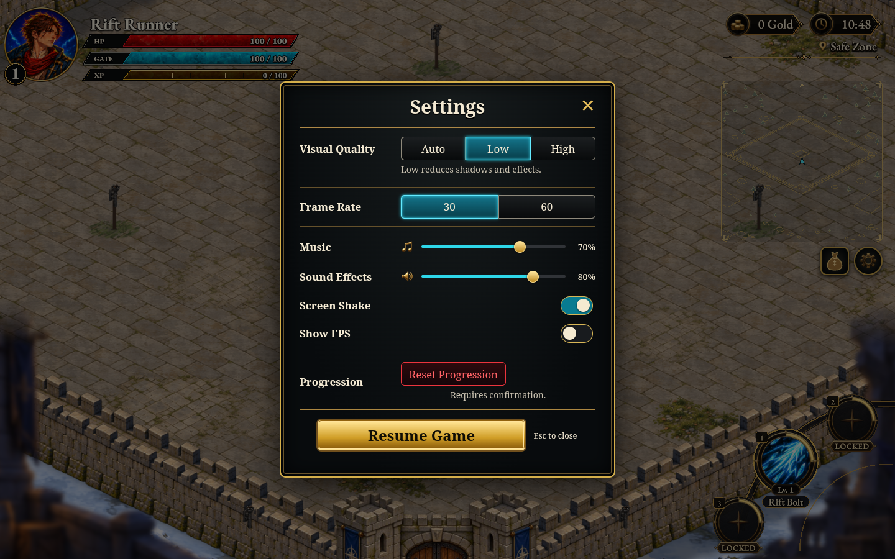
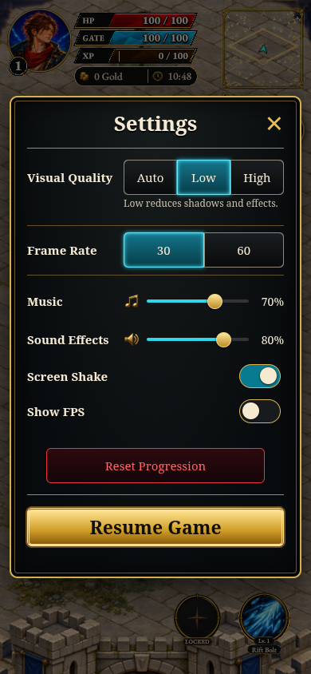
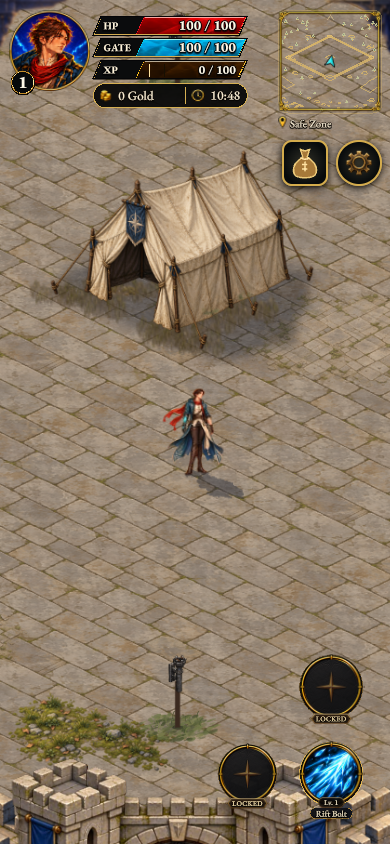
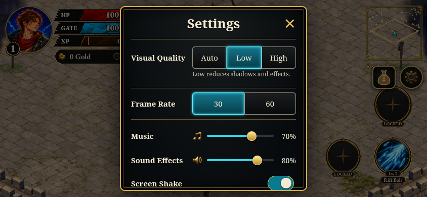

Generated gold gear, Music and Sound Effects icons. Desktop, portrait and landscape live checks passed. The gear retains a 46×46 target; keyboard access, Resume and reset cancellation pass.
Live results · Live asset byte checks · Local results



